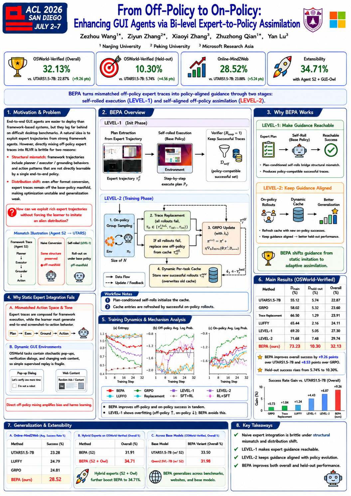
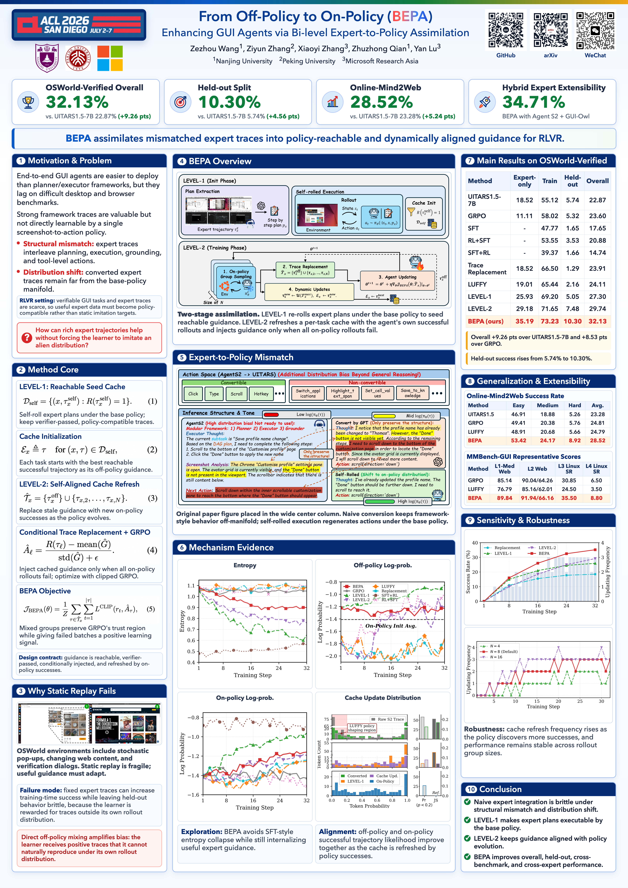

Design Reference
Use `paper-poster-imagegen` to create and critique A0 portrait poster mockups before implementation.
Codex skills for academic poster generation
Turn research papers into accurate A0 HTML/PDF posters by using AI image generation as a design reference, then rebuilding the final poster from verified paper content.
Skill2Poster separates poster generation into design exploration and factual reconstruction. Image generation is used to explore layout, density, hierarchy, and style. The final poster is rebuilt in HTML with real text, figures, tables, equations, logos, QR codes, and measured A0 dimensions.
Use `paper-poster-imagegen` to create and critique A0 portrait poster mockups before implementation.
Keep the paper, local assets, metrics, and captions as the source of truth instead of trusting generated text.
Use `academic-poster-builder` to rebuild the poster as an inspectable, exportable A0 HTML/PDF-style artifact.


The example poster images use From Off-Policy to On-Policy: Enhancing GUI Agents via Bi-level Expert-to-Policy Assimilation as the demonstration subject.
Identify the central claim, required figures, core equations, result tables, captions, and venue constraints.
Define the title, authors, thesis sentence, metric cards, section order, required figures, QR codes, and negative constraints.
Create a high-fidelity A0 portrait reference that captures layout direction without becoming the factual source.
Implement the final poster with verified text, real assets, measured dimensions, overflow checks, and export QA.
Skill2Poster complements paper-to-poster systems by focusing on a practical implementation path: visual ideation first, factual HTML reconstruction second.
| Aspect | Paper-to-poster automation | Skill2Poster |
|---|---|---|
| Primary goal | End-to-end poster generation from paper inputs | Reusable Codex skills for high-quality poster construction |
| Image generation | Part of the generated artifact flow | Design exploration only, never factual authority |
| Final artifact | Editable poster output | Measured A0 HTML/PDF-style poster with verified content |
Recommended topics for discoverability on GitHub and search engines.